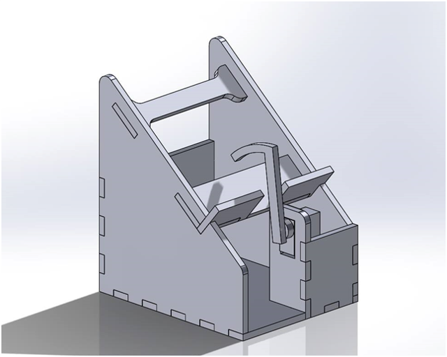
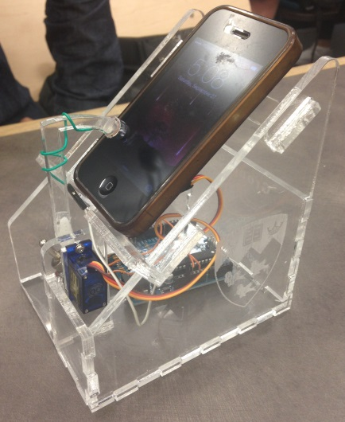
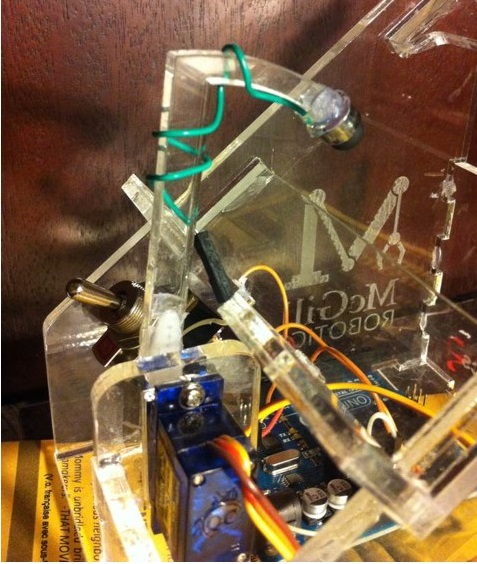
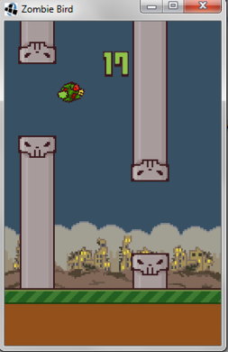
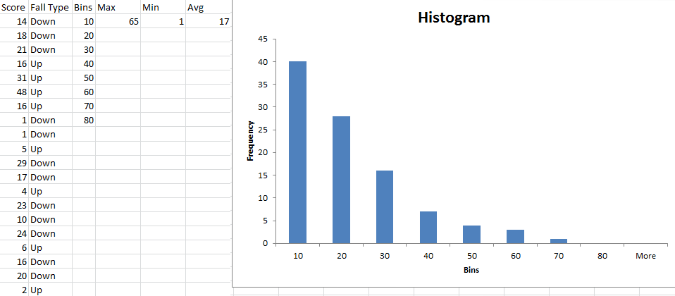

For try-outs on McGill Robotics (plug), the task was to build a robot that plays a game in about 3 weeks. I worked with one other student to build the Flappy-Bot. This is a robot that plays Flappy Bird (kind of).
I suppose this project should be called the "Pressing-two-on-the-iPhone-calculator- with-a-servo-that's-controlled-by-a-flappy-bird-solver-bot," but that doesn't quite have the same ring to it. In the end we didn't have an android phone to test our app on, but in theory it should work (programmer's famous last words). We needed an android phone because none of us had the license or computer to build iOS apps, even though our game would have ported to iOS fine (ugh). What we wanted was to have a version of the game you could put on your phone that had our solver algorithm built in. You'd then plug the phone into the flappy-bot and every time the solver wanted a tap the phone would send the command to the arduino through USB. What we showed is that we have a working robot that can press a touch screen from commands sent through serial based on a flappy-bird solver. If we had an Android phone I'm confident that it would have worked, but it's hard to predict, more about that later. Anyway, here's how the robot works.
The design is very similar to the useless box. All we needed was a stand for the phone that could hold the arduino and the servo and arm. The pieces were then laser- cut out of acrylic
Here it is all put together. We etched the McGill Robotics and the McGill logo into the sides. Acrylic is great for laser-cutting. This was my first time using it. It etched beautifully and you don't have to worry about the stock being warped like you do with wood. We just did one pass on the laser-cutter and that was it. The joints are just put together with hot-glue. I heard from a friend that you can do acrylic joints using solvent. This sounds cool and I'd be interested to try but we were really pressed for time with this project.
This was definitely the most interesting problem we ran into during the project because apparently neither of us had any idea how touch screens work. What we thought, and what I think most people think, was that those stylus pens you see with the soft rubber tip are made of a special kind of rubber that can interact with the screen the same way your finger does. As it turns out, the rubber is just there to protect the screen from what's under it, a wire.
Most phone touch screens use capacitive sensing. I'm not an expert on this, but basically how it works is that there's a grid of capacitive sensors behind the screen. Because your body has electric potential, when a finger comes near the screen the sensors it is closest to are loaded with charge. The phone then senses this charge and locates your finger. We knew almost none of this, which created a very hard problem to get to the bottom of. Thinking that the rubber was the special part, we took apart a stylus pen to attach the rubber tip to our arm. After we took the rubber off I held it in my hand and touched the screen. It worked! Okay, so the rubber must be the special part. So we put it on the acrylic arm to test it out, and it stopped working! hmm. Well look at all of the stuff that was under the rubber tip. There was this little bit of copper wire and a copper coated retaining ring. Those must be there for practical reasons because you can't see them from the outside. Why would they be there otherwise? So we tried again with the whole assembled bottom part of the stylus behind the rubber tip. With that whole assembly in my hand I touched the screen and it worked! Okay, I'm not sure what, but those copper bits must be there for a reason. Let's try it on the arm. Oops, sorry, doesn't work once it's on the arm. At this point we threw everything we knew out. We had to do some research to figure out why it was that the stylus only worked in a hand, and stopped working once we put it on the arm. Then we finally figured it out. A stylus pen works by conducting the voltage from your hand into the metal coating on the outside of the pen. This is connected to a little wire behind the rubber tip. Once the wire comes close to the touch screen it can charge some of the capacitive sensors in the same way that your hand can. This is because it's at the same voltage as your hand. It also acts like your hand in another important way. Your hand has a certain conductivity that needs to be matched by the stylus. If you tried using a steel nail as a stylus the sensors would be charged too quickly and the phone would say "that's not a finger! It may be at the right voltage, but it's way too conductive. Look at how quickly my sensors are being charged. I'd better ignore that." If you tried using something less conductive than your finger the sensors would not be charged at all. The touch screen is calibrated to register a touch when something charges its sensors as quickly as your finger would. It turns out that a small copper wire behind rubber is roughly as conductive as a bag of saline covered in skin (your finger). In the end we added a wire from the stylus tip to the 3V port of the Arduino. This has about the same effect as holding it in your hand. I tried to be very in-depth about this problem here in order to illustrate the exciting and challenging puzzles you get into with these kinds of projects. This sort of problem is what keeps me interested.
This bit wasn't too hard. I could have spent a long time pulling my hair out trying to build a flappy bird clone for the purposes of this project, but there was a deadline. The focus was building the robot not the game, so I cheated and used the tutorial here. That tutorial from KiloBolt is great. What I found cool about it is that it's built on this library that automatically ports the game to all of the popular operating systems automatically.
The algorithm is pretty simple. The bird basically looks at the tower in front of it. If the hole is higher than the bird it asks the Flappy Bot for a jump. Looking back, it would have been cool to incorporate machine learning into the algorithm. I would have had it look at a few towers in front of it and learn the best path. As it is, the algorithm is better than I am at Flappy Bird. I tested it with 100 runs, and a snapshot and histogram of the data is above. The 100 runs had an average score of 17 and a maximum of 89. The bird was guaranteed to make it past the first tower (something I sometimes fail to do) and then it could fail any time after that. The solver would lose for one of two reasons. It could hit the wall on its way down because the solver doesn't look ahead and plan for long falls. It could also fail going up. This issue only arose after we slowed down the rate at which the program could ask for taps based on how quickly the servo could tap. 62% of the losses were going down.
This was a great project, and I made it onto the team! I really get a kick out of silly and useless technology. This is always a funny one to show people. Unfortunately I tried moving my eclipse workspace and broke everything. Oh well. I was done with the project anyway. It would have been nice to actually build it with an android phone. We've shown that the robot can respond to commands over its serial port, so the first thing we would have tried was using USB. The game would be running the solver in the background and sending commands for taps over serial. If that didn't work we could have tried other things like using the microphone or camera flash on the phone for sending commands